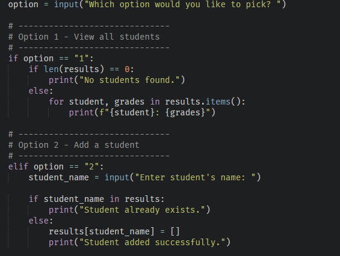
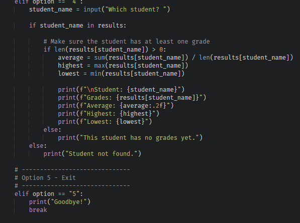
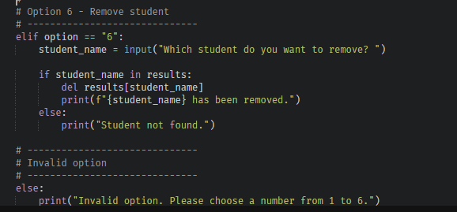

Project Overview
📂 Projects
3 Major Projects
💻 Languages
Python HTML CSS
🛠 Technologies
GitHub Windows Security Visual Studio Code
🎯 Goal
Software & Data Apprenticeship
Featured Projects
Below are some of the projects that best demonstrate my technical knowledge and practical skills. They range from website development to cybersecurity and Python programming.

Portfolio Website
A fully responsive website designed and developed using HTML and CSS. The website showcases my coursework, professional development, projects, technical skills and CV. During development I focused on creating a clean layout, responsive design and professional appearance suitable for potential employers.
View Website
Student Grade Manager
The Student Grade Manager is a console-based Python application developed to strengthen my understanding of software development. The application enables users to create student records, store grades, calculate averages and organise data through an interactive menu system. This project allowed me to apply programming concepts including functions, dictionaries, loops, validation and problem solving while creating a practical solution.
GitHub
Cyber Security Project
Implemented practical security measures including Windows Defender, Firewall configuration, BitLocker encryption, Multi-Factor Authentication and risk management. This project improved my understanding of protecting computer systems and implementing industry-standard security practices.
View ProjectFeatured Python Project
Student Grade Manager
The Student Grade Manager is my largest Python project to date and demonstrates my ability to design and develop a functional console application. The system allows users to manage student information, record grades and calculate averages using Python data structures and reusable functions. While developing this project I strengthened my understanding of computational thinking by breaking larger problems into smaller, manageable tasks and continuously testing each feature before moving to the next stage.
Application Features
The Student Grade Manager was designed to provide a simple but effective way of managing student records through an interactive menu. Every feature was built and tested individually before being integrated into the final application.
➕ Add Students
Create new student records and store them using Python dictionaries.
📝 Add Grades
Record multiple grades for each student using lists.
📊 Calculate Averages
Automatically calculate each student's average grade.
❌ Remove Students
Delete student records safely with validation.
🔍 Error Checking
Checks whether students exist before making changes.
💾 Future Expansion
Designed so JSON saving and loading can easily be added.
Application Walkthrough
The screenshots below demonstrate some of the core features of the Student Grade Manager application. Each feature was created to improve my understanding of Python programming while solving a realistic data management problem.

Add Student
The Add Student feature allows users to create new student records within the application. Each student is stored inside a Python dictionary, with the student's name acting as the key and a list of grades acting as the value. While developing this feature I learned how dictionaries can efficiently organise information and make future data retrieval much easier. I also implemented validation to prevent duplicate records from being added, helping improve the reliability of the system.

Average Grade Calculator
Once grades have been entered, the application processes the information and automatically calculates each student's average. Developing this feature strengthened my understanding of loops, mathematical calculations and reusable functions. Instead of manually calculating results, the program performs the calculations instantly and displays the output clearly within the console. This improved both the efficiency and usability of the application.

Remove Student
The Remove Student feature enables users to delete records that are no longer required. Before deleting a student, the program checks whether that student exists within the dictionary. If the student cannot be found, an appropriate error message is displayed instead of allowing the program to crash. Developing this feature improved my understanding of selection statements, dictionaries and defensive programming.
Technologies Used
🐍 Python
The entire application was written using Python and focuses on building strong programming fundamentals.
⚙ Functions
Functions were used to organise the program into reusable sections, making the code easier to maintain and extend.
📚 Dictionaries & Lists
Student information was stored using dictionaries and lists, providing an efficient way to manage records and grades.
🛠 Debugging
Testing and debugging were carried out throughout development to identify and resolve logical errors.
What I Learned
Developing the Student Grade Manager significantly improved my confidence in Python programming. Throughout the project I strengthened my understanding of functions, loops, dictionaries, lists and selection while also learning how to structure larger programs into smaller, reusable components. I also became more confident debugging code, tracing logic errors and improving the user experience by adding clearer messages and input validation. The project demonstrated the importance of planning, testing and continuously refining software to produce a reliable final application.
Skills Demonstrated
Python Programming — 85%
Problem Solving — 90%
Debugging — 80%
Logical Thinking — 88%
Portfolio Website
Alongside my Python development, I designed and built this portfolio website using HTML and CSS to professionally present my coursework, technical skills and projects. The website is fully responsive and hosted using GitHub Pages, allowing employers to access my work online.
🎨 Design
Designed a clean, modern interface with consistent colours, spacing and typography.
📱 Responsive
Built to work across desktop, tablet and mobile devices.
🌐 GitHub Pages
Published online using GitHub Pages to create a live portfolio for employers.
🧪 Testing
Tested navigation, downloads, links and layouts throughout development.
Cyber Security Project
As part of my coursework I planned and implemented practical security measures to improve the protection of Windows devices. The project introduced me to industry-standard security concepts and strengthened my understanding of protecting users, devices and sensitive information.
🛡 Windows Defender
Configured Microsoft Defender Antivirus, scheduled scans and reviewed security alerts to improve device protection.
🔥 Firewall
Configured firewall rules to allow secure services while blocking unnecessary or insecure ports.
🔐 BitLocker
Implemented BitLocker Drive Encryption to protect data if a device was lost or stolen.
✅ Multi-Factor Authentication
Enabled MFA to add an additional layer of protection for user accounts.
BTEC Coursework
The following units demonstrate the practical knowledge and technical skills I have developed throughout my BTEC Information Technology course.
Currently Learning
🐍 Python
Continuing to build larger applications while improving my understanding of software development.
🌐 Git & GitHub
Using version control to organise projects and publish my work online.
💻 Software Development
Developing practical projects that demonstrate my skills to future apprenticeship employers.
🚀 Continuous Improvement
Regularly updating my portfolio and learning new programming concepts.
Future Development
My next objective is to continue expanding my programming portfolio by creating additional Python applications such as an Expense Tracker, Password Manager and Library Management System. I also plan to improve the Student Grade Manager by adding JSON storage, searching, sorting, editing functionality and a graphical user interface. As my experience grows, I intend to learn SQL, JavaScript and database development to become a more versatile software developer.
Interested In My Work?
Thank you for viewing my portfolio. I am currently seeking a Software & Data Apprenticeship where I can continue developing my programming skills while contributing to a professional software development team. Please explore the rest of my portfolio, view my CV or visit my GitHub profile to see more of my work.
View CV Contact Me GitHub